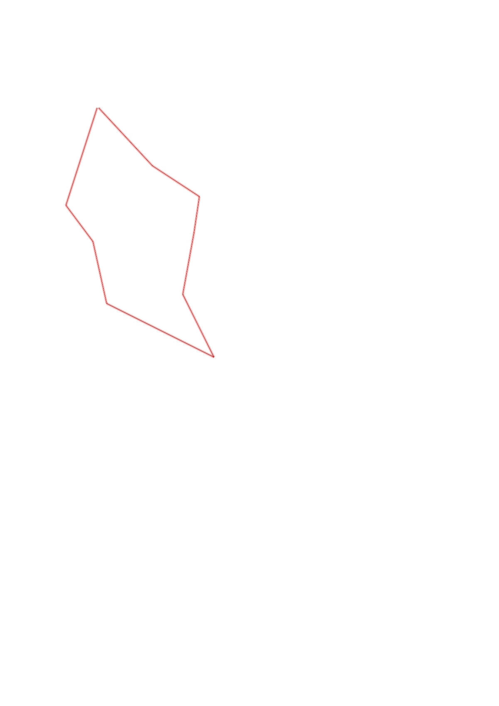
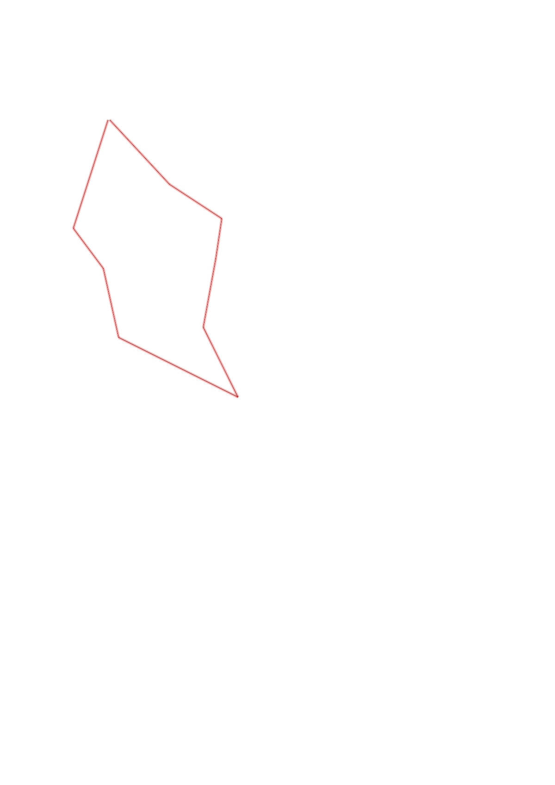

| Control |
Points |
Time Punched |
Distance |
Your Time |
Pace |
Place |
Fastest Time |
Median Time |
% Behind Fastest |
| 51 |
50 |
|
0.61 |
0:08:24 |
13:46 |
1 / 2 |
0:08:24 |
0:08:30 |
0% |
| 41 |
40 |
|
0.27 |
0:04:51 |
17:57 |
2 / 3 |
0:02:52 |
0:04:51 |
69% |
| 56 |
50 |
|
0.38 |
0:06:56 |
18:14 |
2 / 2 |
0:02:59 |
0:04:57 |
132% |
| 103 |
100 |
|
0.72 |
0:13:18 |
18:28 |
1 / 1 |
0:13:18 |
0:13:18 |
0% |
| 75 |
70 |
|
0.42 |
0:05:31 |
13:08 |
3 / 3 |
0:04:33 |
0:04:39 |
21% |
| 43 |
40 |
|
0.38 |
0:03:03 |
08:01 |
4 / 5 |
0:02:11 |
0:02:57 |
39% |
| 95 |
90 |
|
0.22 |
0:05:07 |
23:15 |
3 / 5 |
0:01:04 |
0:05:07 |
379% |
| 42 |
40 |
|
0.34 |
0:04:37 |
13:34 |
3 / 4 |
0:02:38 |
0:03:51 |
75% |
| Finish |
0 |
|
0.47 |
0:04:25 |
09:23 |
7 / 9 |
0:02:13 |
0:03:12 |
99% |
Total Distance Covered: 3.81km
Points Scored: 480
Late Penalty: 0
Final Score: 480
Total Time: 0hours 56minutes 12seconds
Efficiency: 125.98 points/km
 
